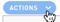
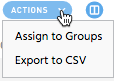
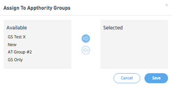

Open topic with navigation
Apply Actions to Device Groups
Click

to access the menu to assign selected devices to groups or export device information to CSV.
To assign devices to groups
- Select the devices you want to assign.
- Select Actions > Assign to Groups.

- Select the groups you want and click Assign. An informational banner displays at the top of the screen indicating the status of group assignments.
